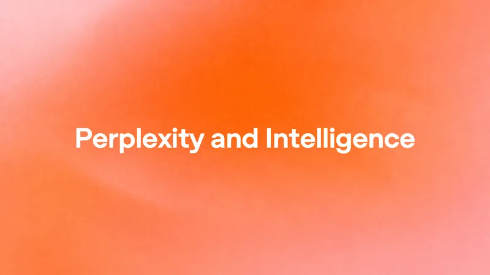
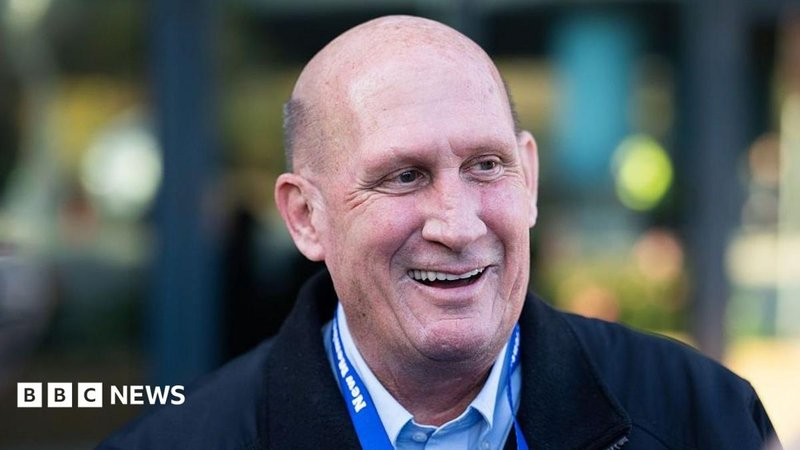

国际重点OpenAI 发表文章，用“困惑度”衡量模型进展并呼吁建立共同评估方法
Perplexity and Intelligence
OpenAI 发表文章，介绍如何用困惑度（perplexity）衡量人工智能模型进展，并认为这有助于开发者建立评估新能力的共同方法
OpenAI 官网 · 11-22 08:00
看原文

国际重点Perplexity and Intelligence
OpenAI 发表文章，介绍如何用困惑度（perplexity）衡量人工智能模型进展，并认为这有助于开发者建立评估新能力的共同方法
MiniMax 研究团队利用最新内部模型，对现代密码方案开展系统性自动化密码分析，并刷新相关国际挑战赛纪录
量子位报道，腾讯元宝与伦敦国王学院（KCL）发布首个基于群聊构建的 Agent 记忆基准，用约 8 万条群聊消息组成考卷，用于评估智能体的记忆能力
天津大学脑机海河实验室团队在《科学·进展》（Science Advances）发表研究，首次实现人体超声脑机接口的高时空分辨解码
量子位报道，DeepSeek V1 作者的创业项目曝光，产品为一款面向本地部署的开源 Agent
Oracle 表示，已确保履行与 OpenAI 合同所需的全部资金。双方在人工智能基础设施上的合作推进较快，位于美国得克萨斯州 Abilene 的园区已用于 GPT-6 Astra 训练，整体接近完工
一家美国初创企业公布自研人工智能 CPU 架构 Frostbite，称其采用新的指令集与免费多线程设计，模拟测试中每瓦性能约为相近尺寸传统处理器的 4.59 倍；该芯片尚未流片
分析师郭明錤称，谷歌计划削减 2027 年由博通设计的 TPU 8i 系列芯片出货量约 100 万颗，约占该系列当年出货量的两成
该项目陆地建设已全面完工，投产后每年可在海底地层封存二氧化碳超 100 万吨，对推动海洋能源行业大规模深度降碳具有意义
腾势汽车发布腾势 N8 快问快答，公布预计交付周期，其中纯电旗舰型将于 11 月优先交付
小鹏 G9L 在泰国和印度尼西亚上市，售价折合人民币超过 47 万元。该车为六座旗舰 SUV，搭载图灵 AI 芯片和全域 800V 高压平台，面向全球多国销售
深圳地铁鸿蒙版 App 在华为应用市场开启测试，支持刷乘车码进出站、查看线路图、开发票和查询站点设施等功能
Delta flights in and out of Atlanta delayed due to system outage
The Verge 报道，达美航空进出亚特兰大的航班因系统故障出现大面积延误，事发距此前一次全国范围停飞仅约一周
Protesters storm Meta offices in India
The Verge 报道，抗议者冲入印度的 Meta 办公场所，印度国大党要求恢复其领导人的 Instagram 账号
韩国电力公社（KEPCO，韩电）确认再发生一起大规模数据泄露，约 152 万用户个人信息外泄
塔唱片称发现未经授权访问，约 1020 万账户的邮箱和用户 ID 泄露。近期日本多家零售企业接连披露数据泄露，传统 IT 系统的安全弱点再次引发关注
经中国证监会批准，沪深北交易所将融资买入证券的最低保证金比例由 100% 下调至 80%，并与沪深交易所、中国结算的一揽子降费及创业板做市商制度等措施一同发布，旨在加强逆周期调节、激发市场活力
Dip Buyers Hesitate to Step In as Nasdaq 100 Nears a Bear Market
据彭博 RSS，在美股回调背景下，纳斯达克 100 指数逼近熊市，逢低买入者犹豫不决、迟迟不愿进场
国家开发银行已完成今年国家助学贷款发放工作，发放金额为 1163 亿元
钛媒体报道，南方电网储能抽水蓄能项目落地首单数字人民币结算，金额为 50.6 万元，被视作资金链新基建的一次验证
Bessent refuses to rule out Huang’s return to Nvidia
据 FT RSS，美国财政部长贝森特拒绝排除黄仁勋重返英伟达相关安排的可能
The American dream of home ownership recedes as mortgage rates surge
据 FT RSS，随着抵押贷款利率飙升，美国“拥有住房”的传统梦想进一步远去
S. Korea Rolls Out Phased Measures to Stabilize Stock Market
据彭博 RSS，韩国推出分阶段措施，以稳定近期波动加剧的股票市场
COP31 climate talks fail to reach deal amid fossil fuel and money rows
BBC 报道，第 31 届联合国气候变化大会（COP31）因围绕化石燃料表述和资金问题的分歧，未能就应对气候变化达成突破性协议

国际重点Democrats win largest House majority since 1992 after flipping North Carolina seat
BBC 报道，民主党在中期选举中翻转北卡罗来纳州一个席位后，已至少赢得 258 个众议院席位，共和党至少拥有 173 席，为 1992 年以来最大的众议院多数
澎湃新闻报道，央视曝光部分网红褪黑素产品剂量超标两到三倍。在保健食品和网络销售监管收紧的背景下，相关产品安全问题再次引发关注
青海省德令哈发生 5.6 级地震后，当地经过三轮排查，确认无人员伤亡
上海警方侦破一起以虚假期货平台实施的网络诈骗案，涉案金额达 1.2 亿元
新一股冷空气即将影响中国，部分地区降温幅度将超过 10℃
Explosion on Russian ship at Libya port caused by suspected drone attack, officials say
BBC 报道，一艘俄籍船只在利比亚港口发生爆炸，官方称疑遭无人机袭击。利比亚东部政府表示，该船在返回俄罗斯途中停靠补给
South Korea education minister resigns over exam cheating scandal
BBC 报道，韩国教育部长崔教珍（Choi Kyo-jin）辞职。他承认，为防止大学入学考试出现人工智能辅助作弊而临时采取的措施造成了混乱
浙江上山国家考古遗址公园暨上山博物馆正式开放，向公众展示相关史前文化遗址和研究成果
汇聚 40 余位上海艺术家、80 多幅作品的“新海派水墨・陶艺艺术特展”在新加坡中国文化中心展出，是迄今在新加坡举办的规模最大的新海派相关展览
交响乐《茶马古道》在云南普洱首演，以音乐再现千年茶马古道的历史图景
广西举行留学生“斗诗”活动，通过对诗、诵读等方式，让外国学生感受中国诗词的趣味和魅力
Italian jeweller and businessman Paolo Bulgari dies aged 89
BBC 报道，意大利珠宝商、商人保罗·宝格丽（Paolo Bulgari）去世，享年 89 岁。其家人在声明中称他为“我们这个时代最伟大的珠宝商”
Miley Cyrus marries Maxx Morando in California ceremony
BBC 报道，美国歌手麦莉·赛勒斯（Miley Cyrus）与马克斯·莫兰多（Maxx Morando）在加州举行婚礼。两人相恋约四年，并于 2025 年订婚
Director Luca Guadagnino Says His American Psycho Adaptation Is No Longer Moving Forward
IGN 报道，导演卢卡·瓜达尼诺（Luca Guadagnino）确认，由他执导的《美国精神病人》（American Psycho）改编项目已不再推进
Binding of Isaac developer removes AI music from Repentance Plus
The Verge 报道，《以撒的结合》（The Binding of Isaac）开发商 Nicalis 已从 Repentance+ 中移除此前未披露的人工智能生成音乐。创作者埃德蒙·麦克米伦（Edmund McMillen）称，自己并不知情
Nintendo Just Launched Its First-Ever Official Switch 2 Black Friday Deal, Erasing September's Price Hike With $88 in Bundle Savings While PS5 and Xbox Sit Out
IGN 报道，任天堂推出 Switch 2 首个官方黑色星期五优惠，马里奥赛车世界套装降价，相当于抵消 9 月涨价，套装可节省约 88 美元
Rockstar explains why GTA 6's Jason barely says a word, and it’s all down to Steve McQueen
Eurogamer 报道，Rockstar 表示，《GTA 6》主角杰森少言寡语的设定，灵感来自史蒂夫·麦奎因（Steve McQueen）在电影《亡命大煞星》中的形象，以及对前陆军游骑兵的调研
Nioh 3 Complete Edition has quietly been rated in Korea, though Koei Tecmo hasn't announced it yet
Eurogamer 报道，光荣特库摩尚未宣布的《仁王 3 完全版》（Nioh 3 Complete Edition）已在韩国完成分级，距基础版发行约一年，显示该版本可能即将公布